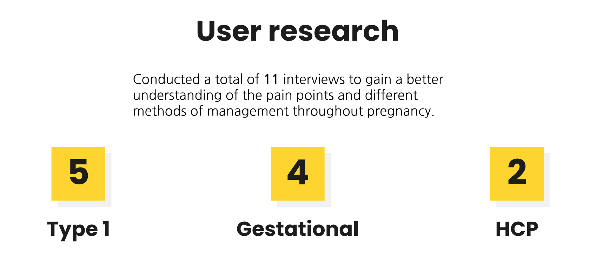

Scope: UX/UI Design & Research Team: Kelly L., Nicole L., Quinn V. My Role: UX/UI Designer
Overview
In a 10-week sprint, my team and I were tasked by Dexcom to develop an educational tool and support system. This tool aims to address the challenges faced by patients with gestational diabetes using a continuous glucose monitor (CGM) device, that can be integrated into the Dexcom system. The tool was designed to educate women about their condition and simplify the management of diabetes during pregnancy.
✅ Key objectives: educating patients on how their glucose levels impact the fetus through our solution- goal setting which we found provided both emotional and clinical support throughout women’s gestational diabetes pregnancy journey.
This project is under NDA. Design, prototypes, and assets have been omitted or modified. Contact me for further questions regarding my experience.
Wireframe of our Prototype
Blurred for confidentiality
Through iterative design and testing phases, the tool incorporated user feedback and ensured it met the specific needs of pregnant women with diabetes.
Milestones included:
Researching existing tools and patient needs to define the project scope.
Designing user interfaces and workflows for intuitive interaction.
Conducting user testing to gather feedback and refine the tool's usability.
Collaborating with healthcare professionals to ensure clinical accuracy and relevance.
✨ The prototype was developed to empower patients with the knowledge, support, and tools necessary for effective gestational diabetes management, thereby contributing to better health outcomes for both mothers and their babies!
Background Information
Who is Dexcom and what is a CGM?
Dexcom is a company from San Diego, California that produces and manufactures (CGM) continuous glucose monitors. CGM produces up to 288 daily blood glucose values that allow the detection of glucose patterns that would be impossible to notice with 5-7 finger sticks daily.
What is Gestational Diabetes?
• In the first trimester, it can cause pregnancy loss or malformations.
• Later in the pregnancy, the fetus will increase insulin production as the mother’s blood glucose crosses the placenta. This can cause excessive growth of the fetus leading to labor problems and increased cesarean section.
• After birth, infants are at risk of neonatal hypoglycemia (low bloodsugar), obesity, and type 2 diabetes if left untreated during pregnancy.
Why is Gestational Diabetes important to manage?
Gestational diabetes requires support and education about nutrition, glucose management, and its potential impacts on the fetus. Management of gestational diabetes is especially tenuous since management dependencies change throughout pregnancy as insulin tolerance increases and physicians tighten glucose ranges.
Moreover, individual experiences vary, influencing nutritional requirements and emotional well-being, further complicating the management approach.
Who are our stakeholders?
Our team primarily focused on women diagnosed with diabetes during pregnancy, as well as those with Type 1/2 diabetes who are also pregnant. Regardless of the type of diabetes, the primary concern for these pregnant patients is the impact of their glucose management on the fetus.
Challenges Gestational diabetes is incredibly difficult to manage
For people living with diabetes, neglecting their care can be life-threatening. This risk is even greater for pregnant women, as it affects not just their health but also that of their unborn child. Consequently, gestational diabetes and glucose management often take precedence, overshadowing the focus on the pregnancy itself.
Our objective is to understand the experiences of pregnant women with diabetes in order to design tools that manage diabetes seamlessly, allowing them to focus on a healthy pregnancy.
So…
❓ Problem Statement How might we retool CGMs to provide education and support for patients with gestational diabetes throughout their pregnancy?
With the goal of...
üéØ Educating patients on how their glucose levels affect the fetus while providing emotional and clinical support. Our prototype should enhance patient experience and help them achieve positive management outcomes for their condition.
How can we achieve this goal? → Start by empathizing with and understanding pregnant patients’ challenges
Beginning to Understand Gestational Diabetes
To start, our team conducted qualitative research and interviews with patients and clinicians to understand their personal pain points. This approach enabled us to connect diverse challenges faced by pregnant women with diabetes, leading us to pinpoint opportunities to better serve patient needs through CGM technology systems.
Overview of our Research Process
Secondary Research
To better understand gestational diabetes, we conducted extensive secondary research and reviewed materials provided by Dexcom. We examined data related to diabetes during pregnancy and delved into women's firsthand experiences through organic content such as interviews, blog/social media posts, and articles.
Findings from our research:
No two experiences are the same
Common, primary goal → healthy baby
For this, according to the research, women need control over four areas of their lives: Mental health, Pregnancy management, Glucose management, and Lifestyle. Supported through: Tools, education, care team, friends & family, and social-economic factors.
We further organized challenges previously discovered by Dexcom based on the four main areas identified above.
How do CGMs (continuous glucose monitors) factor into this?
CGMs can provide too much information that is unhelpful for both patients and healthcare providers
When asked about CGM, HCPs (healthcare providers) did not recommend or use them with women with gestational or type 2 diabetes. Both patients & doctors claimed it took time to onboard & understand all the extra information.
The CGM’s information was also not needed by HCPs, since they only need the 4 sugar levels from finger pricks
Insights from patients and educators
To gain a deeper understanding of women's experiences managing diabetes during pregnancy, our team conducted 11 comprehensive interviews. We spoke with 5 women with type 1 diabetes, 4 women with gestational diabetes, and 2 diabetes nurse educators to identify key pain points and areas of opportunity.

These questions explored their overall management style changes throughout pregnancy, alongside their adoption and understanding of tools such as CGMs and others they chose to utilize.
• CGM improved confidence
• A drastic increase of insulin and insulin resistance around trimester 3 which led to → An increased focus on numbers because now the stakes are much higher with pregnancy
• Started using CLARITY (the Dexcom app that connects with your CGM and highlights your glucose patterns & trends) a lot more with endocrinologists to discuss patterns
“There's more insulin resistance so I'd say there's just more curveballs where you have to get on it right away to get your glucose back in range.”
Patient M. T1D
“I'm in more pressure than I've ever felt in my diabetes before [in regards to increased insulin resistance in her third trimester]”
- Patient E. T1D
The education the healthcare system provides for women is very generic, added to the time constraint, many women didn’t have enough information to adjust well throughout their pregnancy while also having a difficult time adapting to a new diet, especially during pregnancy cravings
Additionally:
Difficulties getting over the stigma of diabetes while also being unsure about their GDM diagnosis
Hard time adjusting to the constraints
Constantly logging their diet and blood sugars on paper was burdensome
“You don't have months and months to adapt your eating habits and all of these things, it has to happen rather quickly, a pregnancy is only 40 weeks”
- Pam DNE
“I should be able to do what I want all the time, be happy. I can't even eat, what I want, that sucks right.”
- Patient R. GDM
Major pain points for Type I & Gestational diabetes
By the 3rd trimester, women are generally more exhausted & stressed, attributed to the fact that she is overwhelmed with the new information on diabetes, pregnancy, and glucose management
Added on the lack of nutritional information from HCPs
Patients needed to conduct their own research causing more stress
Due to the heavy stress the woman faces, she usually relied on support from family & loved ones for emotional aid
But also wished for more communal support
“I was so worried about managing diabetes and managing my pregnancy, they didn't appreciate how much you have to learn about how to take care of a baby once they're actually here.”
- Patient K. GDM
“When I couldn't get a high blood sugar to come down, and it would hit 300 I'd start freaking out. Am I hurting the baby? It somehow doesn't matter how much you know.”
- Patient V. T1D
Persona
We created 2 personas to help us build journey maps that outlined typical women’s pregnancy experiences. These artifacts helped us visualize their journey & identify opportunity points to improve Dexcom’s tools.
Persona (blurred for confidentiality)
Journey Map
We then used the personas to build our journey maps to outline the emotional experience of a woman’s pregnancy to determine where our tool could alleviate some of their issues.
Journey Map (blurred for confidentiality)
The organization of the journey map allows us to understand their emotions from preconception to all 3 trimesters as well as postpartum.
We focused on multiple aspects: lifestyle changes, encompassing diet and exercise over the months, their knowledge base including what they currently know and want to learn, and the tools and support they used during different periods.
Additionally, we examined their management styles with glucose and their experiences wearing a CGM
→ Using the information from these categories, we were able to identify some of their challenges and thus find opportunity points that we can focus on.
üîé Turning Insights into Design Opportunities
During these 9 weeks, our objective was to delve into the women's experiences to inform the design of tools that specifically address their challenges. Therefore, our initial focus was on pinpointing these challenges through user interviews.
We derived “How might we” questions from our research to help us narrow down focus for opportunity points.
❓ How might we increase the understandability of CGM data & provide support to pregnant women with diabetes?
Why? → To alleviate onboarding stress and encourage HCP’s to use & recommend a CGM
❓ How might we personalize education programs for patients based on their specific needs?
We also wanted to explore women’s current education experience managing glucose during pregnancy, what worked and what didn’t, and what personalized education looks like for them.
Opportunity points we developed through our research:
üí° 1. Develop a tool that feels more customizable/personalized → Accommodates women with various backgrounds.
üí° 2. Creating a supportive community among patients → Support is a driving force in helping them manage their stress
üí° 3. Offer more digestible information on the Glucose Monitor to make it easier for newcomers to understand → Encouraging women to better manage their glucose level
üí° 4.The Clarity app (Dexcom‚Äôs retrospective data analysis tool), was used more during pregnancy to gain insights into trends and patterns, enabling both immediate and long-term adjustments.
→ Leverage the Clarity app to communicate the connection between glucose levels and health decisions
These were then presented to our Dexcom stakeholders for their approval before we began iterating solutions.
3/4 of the opportunity points were fully fleshed out over the course of the sprint.
The team and I brainstormed on all four concepts for the next steps. However, during user testing, the idea of a supportive community garnered less interest than the other three. Additionally, there were privacy concerns from Dexcom. As a result, our iterations and final solution primarily focused on the remaining three opportunity points.
üìù Early Sketches
We started by creating mockups that addressed the pain points identified in our interviews and be feasible to integrate into the Clarity app.
Wireframe Sketches (blurred for confidentiality)
For our initial sketches, we iterated with the Dexcom Clarity mobile app in mind due to its alignment with our pain points, particularly features like "time in range" and patterns frequently used by our interviewees.
Additionally, given the functionality of the G6 and Clarity platforms, Clarity was the optimal choice for meeting patients' management needs and facilitating communication with clinicians.
Sketches (blurred for confidentiality)
One of the primary pain points we aimed to address early on was users feeling overwhelmed by CGM data. To tackle this, we focused on providing digestible onboarding information. This led us to explore implementing a pregnancy mode in the onboarding process that would afford pregnant women to have customizable target blood/sugar ranges (ideally reducing stress to stay in range!)
Usability Testing & Research
After prototyping numerous features within the Clarity app, we sought feedback from pregnant users to determine their preferred concepts through card sorting and user testing.
Testing methods preview
Showcased seven prototype sketches so women could sort them from most to least interested, and vote on the two concepts they liked most.
Card Sorting Results
The concept that received the most positive feedback was the goal customization and streak feature, which all participants voted for their top 2.
Results from our card sorting
Narrowing down our solution
For the next round of prototyping, we decided to move forward with the goal customization feature and recommended target range values.
Prototype (blurred for confidentiality)
“[the feature] doesn’t give me more to do. There’s already so much to do, and I just want to stay motivated”
The design of our goal feature parted from women’s struggle with exhaustion near the end of their pregnancy.
“What I would love to see first from Dexcom is straightforward, automated support, like ‘hey, you’re crushing it this week.”
Both women with T1D and gestational expressed that setting goals and keeping women motivated during this period should be a priority.
“You want to quit when it gets the hardest, but that’s when you need the most motivation.”
Another woman with T1D said that while the goal feature was already in Clarity, “it could be implemented better.” She said if the language was more encouraging, and if you could get notifications throughout the day celebrating your wins through streaks, that would keep her checking her app and more motivated.
2nd testing round: Wireframes
After conducting a walkthrough and organizing our findings, we created wireframes that reflect the main concept our users found most compelling from our user testing feedback. This new wireframe enhances Clarity's goal-setting feature by introducing streak rewards and personalized goals.
Wireframes (blurred for confidentiality)
For our 2nd round of user testing, we tested 3 women with type 1 diabetes
Testing Feedback
Simplify our suggested Data sets with the information women were more inclined to utilize
Minimizing the amount of input for them
Making the format for the homepage easily digestible between different goals to ease and not overwhelm new and continuing CLARITY users
Feedback from Dexcom Stakeholders
In addition, the team and I had the opportunity to present to Dexcom stakeholders during our interim presentation, where we engaged in insightful discussions and gained new perspectives for refining our prototype. The solution received positive feedback, as well as receiving weekly critiques through our meetings with Dexcom designers to enhance our design process for future improvements.
Iterations we made following our wireframe testing:
Prototype Iterations (blurred for confidentiality)
Implemented recommend goals which provide women with already formatted goals that suggest target ranges to reduce the learning curve for new users
Updated the settings page by simplifying the process and reducing the amount of effort for women to create a new goal
What was the emotional experience?
Women expressed that going through this constant change of ups and downs was extremely exhausting and stressful.
We start to see increased stress and decreased motivation during the first trimester because of the increased pressure of having to manage diabetes perfectly in order to minimize any risks to a child.
Emotion Map
✨ However, with the new Solution, we found that the women’s experience has improved and their emotions no longer dip as much.
Although their emotions are not perfect throughout their entire pregnancy which is completely normal, they do however experience fewer fluctuations due to the encouragement that women are receiving from our goal-setting feature.
Emotion Map
✨ The new goal customization feature aims to support and motivate women during the most challenging stages of pregnancy. Expectant mothers are increasingly attentive to their data, and our tool supports them in closely monitoring these crucial metrics.
Final Prototype
The final prototype incorporates the feedback that the team and I received from the 2 rounds of user testing, refining the goals feature to effectively address the question “ How might we increase the understandability of CGM data to alleviate stress & provide support to pregnant women with diabetes?”
Examples of some of the solutions we brought to our stakeholders:
→ Personalize your notifications to align with your day to day life.
→ Streak feature allows for communication with physician and helps to provide motivation by showing your progress.
Final Prototype (blurred for confidentiality)
üëç We showcased the final prototypes to Dexcom stakeholders and mentors, who enthusiastically approved our work. Our efforts now provide a solid foundation for future design and research initiatives in Dexcom for women experiencing diabetes during pregnancy!
Next Steps
Image of our next steps
Reflection
I would like to thank our mentors for their guidance and feedback throughout the entirety of this quarter. It was an incredible and enlightening experience for me to grow as a designer!
My takeaways during this internship:
☺️ Maintaining organization is crucial. Properly documenting your processes and research ensures efficient time management, maximizes the utility of your findings and provides valuable information for stakeholders.
☺️ Empathy towards users is essential in design. Remember the individuals who will benefit from your tools and strive to enhance their lives. As designers, it is our responsibility to make a positive impact.
☺️ It's normal not to have all the answers immediately, especially when tackling complex issues like diabetes. Through diligent research, you'll gradually improve your understanding and ability to process this information.
And if you made it all the way down here, thanks for taking the time to read this! üéâ ü•≥

 Contact ->
Contact ->